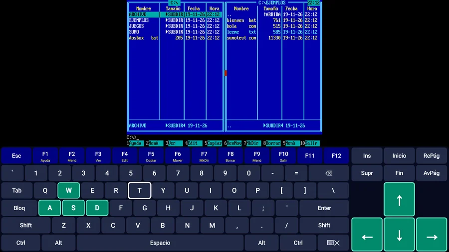

Emulador de MS-DOS a pantalla completa: arranca en un explorador de dos paneles estilo clásico, azul y amarillo, se ajusta solo al equipo y abre .EXE, ZIP e ISO.
MS-DOS de verdad que emula al mango: le saca el jugo a tu TV box o celular, y baja juegos desde internet.
Permiso «Acceso a todos los archivos»: hace falta para abrir programas de cualquier carpeta o pendrive; Play Protect puede avisar al instalar fuera de Play Store. El modo Overdrive puede calentar el TV box (si sube mucho la temperatura, bajalo o apagá el equipo un rato). Archive.org es de terceros: bajá sólo software libre, shareware o con licencia; la responsabilidad es tuya. La 1.0.0 ya se probó en un TV box real; la 1.0.1 todavía no se probó en un equipo real. Las capturas del explorador con teclado superpuesto son composiciones de la pantalla real del motor (en PC) más el teclado de la app, no fotos del TV box.
SumoDOS usa el motor DOSBox Pure bajo licencia GPL v2. Quien descargue o compre la app tiene derecho al código fuente completo (sin claves de firma). Lo podés pedir desde Contacto o bajarlo acá: Código fuente (GPL v2).
🚀 Emula al mango: le saca el jugo a tu aparato
Lo mejor de SumoDOS: corre al máximo que da tu TV box o tu celular. Al abrir, Turbo Auto-Tune mide el equipo (núcleos y MHz de la CPU, ARM64 o ARMv7, RAM y Hz de la pantalla) y arma solo la configuración más rápida que aguanta sin cortes: recompilador dinámico nativo ARM, ciclos al máximo con el límite justo para tu CPU, memoria y calidad de audio según tu RAM, buffer de sonido a medida y video por GPU que dibuja sólo los cuadros nuevos. ¿Querés todavía más? Modo Overdrive.

SumoNC con el teclado 1.0.1 (composición: pantalla real del motor + teclado de la app)
Un solo APK para Android TV / TV box con Android 9 o más (pensado para el MX10) y para celulares Android 9 o más nuevos.
Así exprime cada equipo · Juegos desde internet · Novedades 1.0.1
Cómo se auto-optimiza según tu hardware, cómo bajás juegos y apps sin salir de la app, y lo nuevo de la 1.0.1.
🧠
Detecta tu hardware
Cuenta los núcleos y los MHz de la CPU, reconoce si es ARM64 o ARMv7 de 32 bits, mide la RAM total y libre y los Hz de la pantalla. Con eso elige el perfil (un TV box de entrada como el MX10 no se trata igual que un celular potente).
⚙️
Recompilador dinámico nativo ARM
El motor DOSBox Pure traduce el código x86 del DOS a instrucciones ARM o ARM64 en vivo, en vez de interpretarlo instrucción por instrucción. Es lo que lo hace volar en equipos chicos.
🔥
Ciclos al límite
Ciclos de CPU al máximo con un tope ajustado a tu equipo: 100 % en equipos de 4 núcleos o más, 85–95 % en los más modestos para que el sonido no se corte. Overdrive sube el límite a 120 % (calienta más el TV box).
🎞️
Frameskip adaptativo y GPU
El video va acelerado por OpenGL ES y sólo se dibujan los cuadros nuevos: si un juego no cambia la pantalla, no se gasta GPU. Más fluidez y menos calor.
🔊
Audio sin cortes
Calidad de 44,1 kHz (32 kHz en equipos de entrada) y un buffer de sonido calculado para tu aparato. Memoria del PC DOS de 16 o 32 MB según la RAM que tengas.
🌐
Juegos y apps desde internet
Buscador integrado de la biblioteca MS-DOS de Archive.org: escribís el nombre (keen, doom shareware…), elegís juegos, shareware o software libre, o pegás un link de archive.org o de un .zip/.exe.
📦
Descarga y listo para jugar
La app baja el archivo, descomprime el ZIP sola en C:\ARCHIVE\<NOMBRE> y queda listo para abrir desde SumoNC, el explorador de dos paneles. Guarda favoritos e historial de links.
⌨️
1.0.1: teclado nuevo
Flechas más grandes en cruz clásica (↑ justo encima de ↓, ← y → a los costados) y flechas + W A S D en un color que resalta. En la TV y en el celular, acoplado o flotante.
🔵
1.0.1: azul y nítida en la TV
Arranca con el tema azul (los otros 7 siguen en Ajustes). Al escribir, los campos se ponen blancos con letras y cursor negros, y el foco del control remoto se lee perfecto en Android 9.
Lo que la hace distinta
🚀 Emula al mango: Turbo Auto-Tune mide tu equipo y lo exprime al máximo (Overdrive opcional).
🌐 Descargá juegos y apps de MS-DOS desde internet con el buscador de Archive.org, sin salir de la app.
🖥️ Motor nativo DOSBox Pure, con recompilador dinámico ARM.
📁 Arranca en SumoNC, un explorador de dos paneles estilo clásico, azul y amarillo.
⌨️ 1.0.1: flechas grandes en cruz y W A S D destacadas; tema azul y contraste nítido en la TV.
🖱️ Mouse virtual, perfiles por juego y montaje de ZIP e ISO.
🚫 Sin publicidad. Nunca.
Qué es
SumoDOS es un emulador de MS-DOS de verdad para tu TV box y tu celular: el motor es DOSBox Pure, compilado nativo para ARM 32 bits, ARM 64 bits y x86_64, con recompilador dinámico. Arranca directo en SumoNC, un explorador de dos paneles estilo clásico, azul y amarillo, con F1 a F10, línea de comandos abajo (cd, dir, etc.) y F10 para la consola pura. Turbo Auto-Tune detecta el equipo y lo ajusta al máximo (con un modo Overdrive). Pantalla completa, zoom de letra, filtros (píxel nítido, suave, CRT/scanlines) y relación 4:3 o pantalla llena. Teclado en pantalla flotante, acoplado u oculto, con flechas y F1 a F12; mouse virtual táctil o con el D-pad; mapeo de control remoto y gamepad; perfiles por juego; favoritos; y montaje de carpetas, ZIP e ISO. Desde Ajustes y el menú rápido buscás o pegás un link de la biblioteca MS-DOS de Archive.org, lo bajás y queda en C:\ listo para abrir. Sin publicidad.
Qué hace
Arranca en SumoNC, un explorador de dos paneles propio (estilo clásico, azul y amarillo): F1 ayuda, F2 favoritos, F3 ver, F4 editar, F5 copiar, F6 mover, F7 carpeta, F8 borrar, F9 opciones y F10 consola. Enter ejecuta .EXE, .COM o .BAT, o monta .ZIP, .ISO e .IMG. Desde la consola, NC vuelve al Commander.
Turbo Auto-Tune elige solo el perfil del equipo (Auto, Equilibrado, Turbo Máximo, Overdrive o Personalizado) y muestra un indicador de FPS. Overdrive puede calentar el TV box.
Pantalla completa, tamaño de letra/zoom, 4:3 o pantalla llena, y filtros de imagen (píxel nítido, suave o CRT/scanlines).
Teclado en pantalla oculto, acoplado o flotante, con F1 a F12 y flechas grandes en cruz (↑ encima de ↓); flechas y W A S D en color destacado. Se maneja con el control. Mouse virtual (táctil o D-pad) y mapeo de control remoto o gamepad.
Perfiles por juego, favoritos, historial, y apertura de programas, carpetas, pendrives, ZIP e ISO del aparato.
Biblioteca Archive.org: buscá en las colecciones de MS-DOS o pegá un link, guardá favoritos e historial, y la app descarga y descomprime en C:\ARCHIVE.
Sonido Sound Blaster 16, AdLib/OPL3 y PC Speaker. Menú rápido: pausa, turbo, Ctrl+Alt+Supr, captura, favoritos, perfiles y ajustes.
Requisitos
Android TV / TV box o celular con Android 9 o más nuevo
Permiso «Acceso a todos los archivos» para abrir programas de cualquier carpeta o pendrive
Internet sólo para buscar y bajar programas de Archive.org
Funciones
Motor nativo DOSBox Pure (ARM, ARM64 y x86_64) con recompilador dinámico
Arranque en SumoNC: explorador de dos paneles estilo clásico, azul y amarillo, F1 a F10 y consola clásica
Corre al máximo de tu aparato: Turbo Auto-Tune (y modo Overdrive) según el hardware
Pantalla completa, zoom de letra, filtros nítido / suave / CRT y 4:3 o pantalla llena
Teclado flotante, acoplado u oculto, con F1 a F12 y flechas grandes en cruz (flechas y W A S D en color destacado)
Tema azul de fábrica y contraste nítido al escribir con el control
Mouse virtual (táctil o D-pad) y mapeo de control remoto o gamepad
Perfiles por juego, favoritos y montaje de carpetas, ZIP e ISO
Descargá juegos y apps de MS-DOS desde internet (Archive.org) con buscador, directo en C:\
Sound Blaster, AdLib y PC Speaker
Guía ilustrada «Cómo usar», temas de color y registro de errores
Cómo se instala
Descargá el APK e instalalo (si Android pregunta, permití instalar desde el navegador). Es el mismo APK para el celular y la TV box.
Abrila: aparece la guía «Cómo usar» (se puede saltar y volver a ver desde Ajustes).
Tocá «Iniciar SumoDOS» o un favorito. En la TV se maneja con el control.
Para comprar: «Activar» → «Comprar con Mercado Pago».
Novedades
1.0.1 — Teclado en pantalla con flechas más grandes en T invertida (↑ justo encima de ↓) y flechas + W A S D en color destacado, en TV y celular, acoplado o flotante. Arranca con el tema azul. Contraste nítido al escribir (campos blancos con letras y cursor negros) y en el foco del control remoto en todos los temas.